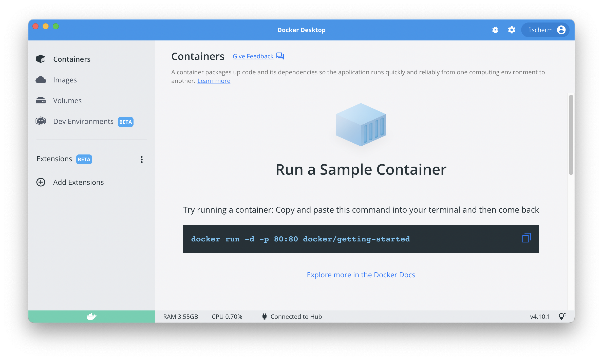

CSC 346 - Spring 2024 - Homework 1 #
Most homeworks will be mini-projects, with some homeworks building on one another. This first homework will be a bit simpler though. I will provide solutions to each homework, so if you get stuck on one part it shouldn't impact the later parts too much.
Points #
This assignment will be worth 16 points (two points per part). Turning the assignment in early will earn you an additional 2 points extra credit.
- Early submission: January 25th 11pm MST (UTC-7)
- Final Due Date: January 27th 11pm MST (UTC-7)
Starting Point #
For each homework assignment I will provide a starter .zip file. The starter zip for this assignment contains a text file which you will fill in with answers for parts of the assignment.
https://www2.cs.arizona.edu/classes/cs346/spring24/homework/NETID-hw01.zip
What to turn in #
Each homework assignment will be submitted as a single .zip file. Rename the starter zip you download for this assignment with your netid in place of NETID. So if I was turning in this assignment I would rename the folder to fischerm-hw01 and then zip it up and submit fischerm-hw01.zip to D2L.
Turn in a .zip file of a folder containing the following files:
NETID-hw01/
docker-screenshot.png (or .jpg)
hw01-answers.txt
Double Check! Not sure if your .zip file is correct? Try expanding it and see what's actually inside before you turn it in.
Part 1: Docker #
Much of the work for this class will be done within a Docker environment to have a uniform development environment across the wide variety of computers everyone in the class has access to.
Install Docker #
A small number of you may already have Docker installed; if you'd like, try typing docker in your shell. If you get a big help output, great, you don't have to install Docker! But most of you will get a "command not found" sort of error.
Please install Docker Desktop. It is available, entirely free of charge, at
https://www.docker.com/products/docker-desktop/
After it installs, it will take a few minutes for the "Engine" to start; once it does, you should see a window that looks roughly like this:

Command Line Interface & Shell #
To run docker, you will need a shell, where you can type the commands. Again for consistency sake, I recommend installing VS Code. It is not required if you already have a development workflow that works for you. However it will be the tool that I will be most able to assist with.
https://code.visualstudio.com/Download
- If you have installed VS Code you can use the built-in terminal (View -> Terminal, or ctrl-~)
- If you are on Mac, you can open the Terminal application at
/Applications/Utilities/Terminal.app - If you're on Linux, then bring up any Terminal or Commaand Prompt.
- If you're on Windows, depending on your OS version, you may have the new Windows Terminal experience, or the original CMD and PowerShell Prompts.
Run Container #
It's quite easy to run a container! Just go to your shell, and type the following command:
$ docker run -it python:3.10 bash
You should see Docker download a few images, and then it will start up a new container, using the python image for version 3.10. You will see that you're inside the container because the prompt changes, like this:
$ docker run -it python:3.10 bash
Unable to find image python:3.10 locally
latest: Pulling from library/python:3.10
16ec32c2132b: Pull complete
Digest: sha256:82becede498899ec668628e7cb0ad87b6e1c371cb8a1e597d83a47fac21d6af3
Status: Downloaded newer image for python:3.10
root@89908dbc0af1:/#
You should see a blinking cursor on the last line, indicating that you are currently in an interactive shell within the container. The command line prompt root@7af0c2e2c7c5:/# tells you that you are the root user inside the container with an ID of 7af0c2e2c7c5.
What to turn in #
Take a screenshot of your terminal window with the output of your docker run command. Name it "docker-screenshot" with whatever image extention it is, and put it into your folder to zip and turn in.
Part 2: Exploring #
Answer some basic questions about the container that you are in. (You're still inside the python container, right?) Turn in the answers to these questions:
Where are you? #
When the container first starts, what directory are you in? What command could you use to find this?
What's in the directory you are in? #
Use ls or ls -lh to get a list of all of the things in the directory. Copy the list into your solutions file. (You don't need to know what any of these are, yet.)
What are in some other directories? #
How do you move into another directory? Look for the /usr directory. List everything that is in that directory as well. Copy both the command you used and its output to your solutions file.
Part 3: Creating a File #
Most Docker images we'll work with don't have any command line text editors such as 'vim' or 'emacs' installed. So we'll use the 'echo' command to create some basic files.
Before you make these files, go to your home directory. Remember how to do that? Once you're in your home directory, create a new text file with "Hello world" in it.
$ echo Hello world > hello.txt
Use ls to see how the directory has changed, and cat to read the contents of the file. Put your results into your solutions file.
Part 4: Moving and Copying #
Rename your file from hello.txt to hello-world.txt Use ls to confirm that the name has changed. Use cat on the new filename, and also on the old filename. Put your results into your solutions file.
Then, duplicate the file several times. Can you put a duplicate file (with a different name) into the current directory? Can you put on into a different directory? Once you've figured out how, record the commands that you used into your solutions file.
Part 5: Directories #
Create a new directory in your home directory, cd into it, and create three small files, all different. Use ls -al to show them. Which column in the output is the size of the file, do you think? Put your results into your solutions file.
Attempt to remove the directory that you just created. What is the error? Work around the error, and put your observations into the solutions file.
Part 6: Grep and Pipes #
The grep program can be used to search for text in files and from STDIN. First let's look at a file. From anywhere in your container, use the following command to search through a log file:
grep group /var/log/alternatives.log
What does the output of this command look like? Compare this to the full text of the file.
grep can be used on files, like you've done so far - but it can also read from its own stdin. To make it read from stdin, all you have to do is, not give it a file to search!
Go back to the log file we were looking at before (/var/log/alternatives.log) and chain together two grep commands: the first should search for install; pipe it into a second, which searches for quiet. Which lines get printed?
I often find it easier to remember only one form for grep, so sometimes I will just do a simple cat as the first command, and pipe it into a grep. Try out that version as well.
Put your results into your solutions file.
Part 7: Multiple containers #
Open up multiple shells on your computer. If you're using VS Code, slect Terminal > New Terminal from the menus. This should open a new tab with an additional shell prompt. Inside each one, start a python:3.10 container. Then make some file modifications in one of the containers. Check: do see the same changes in the other container, or not? What does this tell you about running multiple containers at the same time?
Part 8: Cleaning Up #
When you are done with your container, you need to clean it up. We don't need to save anything that changed inside the container this time, so don't worry about that.
Assuming that your original container is still running, it's time to stop it! The "cleanest" way to do this is to close it down from inside. Try typing exit on the command line, inside your shell, or holding down the ctrl key and the D key (ctrl-d).
The shell program inside your container should terminate; when it does, the container itself will stop (because the process that was used to create it has exited).
Docker should return you to the command line of your own computer. Once it does, re-check the status of all containers with docker ps and docker ps -a .
Put your results into your solutions file.
If any containers are still running, you can stop them using the docker stop [container id] command.
You can remove a stopped container with the docker rm [container id] command.
Docker images can take up a fair amount of space on your host. Use docker images to show the images you have downloaded and add that to your solutions file.
To remove an image from your computer (remember you can always download it again) use docker rmi [image id].
If you're done with everything and you just want to clean up everything, you can use docker system prune -a. Remember this will delete any data stored in stoped containers and any images you've saved!